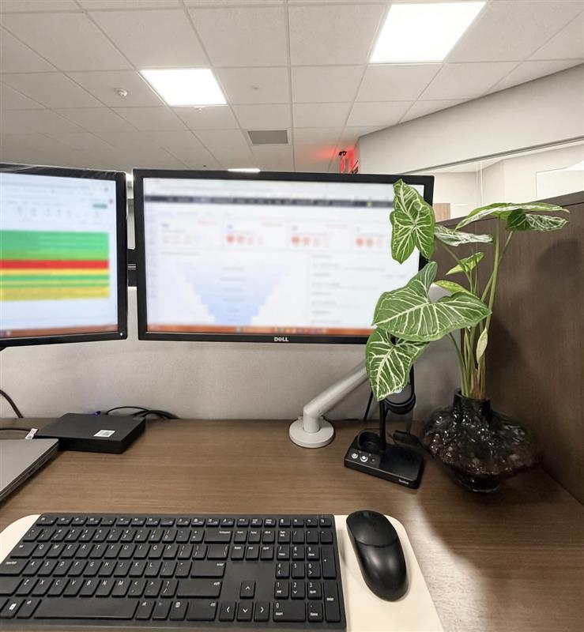
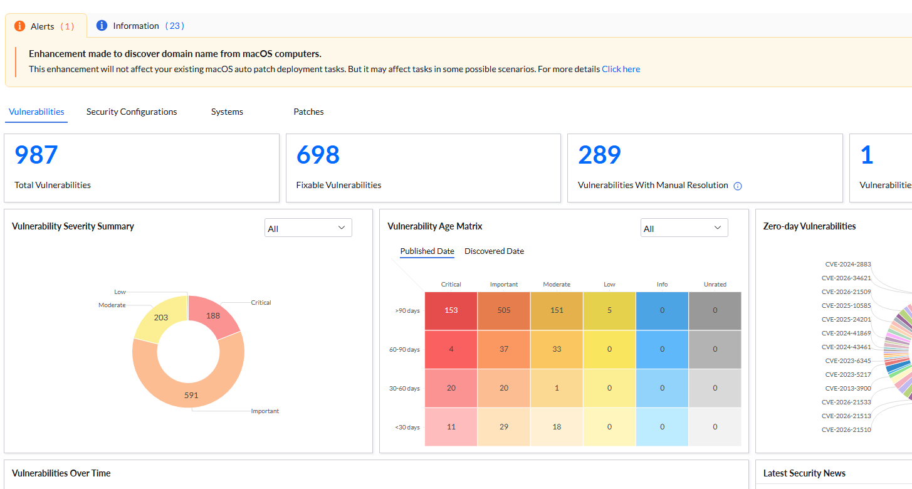

1,392
Endpoints
Enterprise endpoint environment supported.
CYBERSECURITY CASE STUDY
A professional case study highlighting my contributions to enterprise vulnerability management, endpoint patching, and remediation tracking as an IT End User Computing Technician supporting Genesee County's IT operations.

Vulnerability management is an ongoing security process that requires organizations to identify weaknesses, evaluate risk, prioritize remediation, and verify that corrective actions have been successful. In a large endpoint environment, this work requires coordination between security objectives, patch deployment activities, and operational requirements.
In my role as an IT End User Computing Technician with cybersecurity responsibilities, I contributed to enterprise vulnerability remediation and endpoint patch management using ManageEngine Endpoint Central. My work involved reviewing findings, organizing deployment activities, monitoring patch outcomes, and following up on outstanding remediation tasks.
This case study documents the security challenge, my contributions, the remediation workflow, and the measurable reduction achieved during the reported period.
Endpoints
Enterprise endpoint environment supported.
Identified Vulnerabilities
Reported count before and after remediation efforts.
Reduction
Decrease in the reported vulnerability count.
These figures describe the reported change in identified vulnerabilities, not a claim that every endpoint was vulnerability-free. Add the measurement period and reporting scope if those details are available.
A large vulnerability backlog can make it difficult for an organization to understand its current exposure and determine where remediation effort should be directed. Vulnerabilities may affect different products, endpoint groups, and operational environments, and not every update can be deployed in the same way or at the same time.
Remediation also involves more than initiating a patch. Updates can fail, devices can remain outstanding, and reported status must be reviewed to determine whether additional action is needed. A structured process is necessary to track progress and reduce avoidable disruption to business operations.
I contributed to vulnerability remediation as part of enterprise IT operations. My responsibilities combined endpoint management, deployment coordination, technical troubleshooting, and remediation tracking.
I reviewed vulnerability findings and remediation status to help identify outstanding issues and determine where follow-up was needed. Prioritization helps direct attention toward relevant risks while accounting for deployment readiness and operational requirements.
Using ManageEngine Endpoint Central, I supported patch management workflows, organized deployment groups, and coordinated testing and deployment planning. These activities helped structure remediation work across managed endpoints rather than treating every update as an isolated task.
Deployment planning must account for the needs of the organization and the people relying on its devices. I supported planned deployment windows and controlled rollout practices intended to reduce unnecessary disruption to business operations.
I reviewed deployment outcomes to identify unsuccessful or incomplete jobs requiring additional attention. Monitoring these outcomes helps distinguish between updates that have been deployed successfully and those that still require investigation or follow-up.
I reviewed remediation reporting to assess progress and identify outstanding vulnerabilities. Validation and follow-up are important because a deployment attempt alone does not establish that a vulnerability has been successfully remediated.
ManageEngine Endpoint Central — used to support endpoint patch management, deployment coordination, status monitoring, and remediation tracking.
The following high-level workflow summarizes the remediation lifecycle represented by this case study. It is presented as a general description rather than an internal operating procedure.
Examine reported vulnerability information and remediation status to understand the outstanding work and identify issues requiring attention.
Evaluate the findings and support a remediation order based on risk, applicability, and operational considerations.
Organize the relevant patching activities and support appropriate testing and deployment scheduling.
Support controlled deployment of approved updates through established endpoint management workflows.
Review deployment results and identify unsuccessful or incomplete jobs that may need troubleshooting.
Review subsequent reporting to assess remediation progress and identify remaining issues for further action.
The reported vulnerability count decreased from 1,050 to 105 across an environment of 1,392 endpoints. The reduction of 945 identified vulnerabilities represents a 90% decrease from the initial count.
This result demonstrates the value of sustained remediation work, structured patch management, deployment monitoring, and follow-up on outstanding issues. It also provides a measurable way to communicate progress to technical stakeholders.
The result is a reduction in identified vulnerability findings, not necessarily a one-to-one count of patched devices. Vulnerability counts can change as new findings are discovered, rescans occur, and reporting scope changes.
Starting a deployment is only one stage of remediation. Reviewing results and following up on unsuccessful or incomplete jobs are essential to understanding whether the intended outcome was achieved.
A large volume of findings requires a structured approach. Prioritization helps teams direct effort toward relevant security concerns while considering applicability, testing, and operational constraints.
Metrics are most useful when their scope and measurement period are understood. Changes in reported counts should be evaluated alongside the underlying remediation activity and validation results.
Effective patch management balances risk reduction with the need to maintain reliable business services. Planning, communication, and follow-up all contribute to a more consistent remediation process.
Reviewing findings, supporting prioritization, tracking outstanding issues, and evaluating remediation progress.
Supporting endpoint patch management and controlled deployment activities.
Reviewing unsuccessful deployment jobs and identifying where additional investigation is needed.
Using remediation reporting to assess progress and support follow-up decisions.
This case study is a sanitized description of professional experience. It does not include internal dashboards, hostnames, credentials, restricted procedures, or other confidential organizational information. The figures presented should be shared publicly only if authorized.

Applied vulnerability prioritization and remediation practices across 1,392 endpoints, helping reduce identified vulnerabilities from 1,050 to 105. Focused on remediation tracking, patch management, and validating improvements.
View Case Study
Supported risk assessment and removable-media exception reviews by evaluating business justifications, data sensitivity, transfer methods, and potential risks.
View Case Study
Organized security documentation and control-review workflows, including evidence planning, tracking gaps, and documenting remediation activities.
View ProjectI'm interested in opportunities where I can apply my cybersecurity, vulnerability management, and technical problem-solving skills to help organizations strengthen their security posture.
Whether you're recruiting for a cybersecurity role, interested in my projects, or looking to connect with another technology professional, I'd love to hear from you.